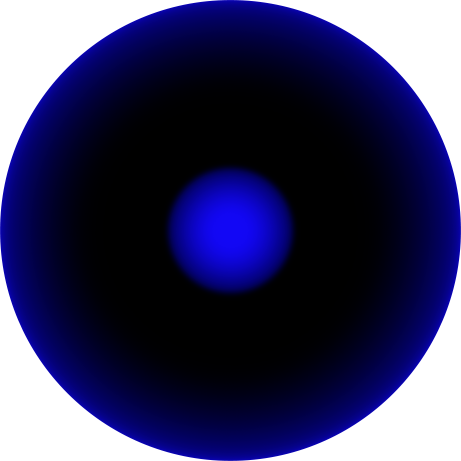

Click and Drag
I’m not just walking.
I’m always walking while looking at something.
It’s both a fantasy I’ve created and a truth they’ve declared.
Every letter feels more like a picture to me,
Every word looks more like an image than something to be read.
That’s why I often question the function of my eyes.
But it’s okay.
My brain is always working to sweep away that doubt.
Even if it takes time.
Even if it makes mistakes.
Still I walk.
